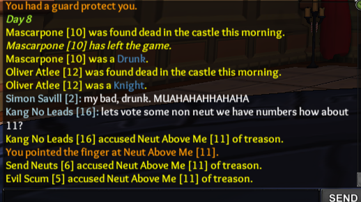

I posted a screenshot some time ago about a game where only neuts won, but now I would like to share the whole thing. I call this the “Neut Revolution”.
Send Neuts [6] was the Reaper.
Kang No Leads [16] was the Neutral King.
Simon Savill [2] was an alchemist.
Evil Scum [5] was a mercenary with the alchemist [2] as a contract.
Part 1
The King finds the Reaper day 2, instead of putting him up for trial he keeps the secret and the reaper promises not to reap the king in exchange. They keep whispering between themselves and become good friends.
Later in the game, they find the reaper and he is accused of treason. The King cannot let this happen.
Part 2

The king decides to pardon the reaper, the rest of the players are not happy with this and decide to vote up the king. Things aren’t looking good…
Part 3
The Alchemist and Mercenary have mercy of the king and decide not to accuse him. There are not enough votes to accuse the king. They realize that neuts have numbers. They decide to join forces and rebel against both the BD and Unseen, who had been mistreating them for a long time. The Neut Revolution has begun.
Part 4

The Neuts use their number advantage to get rid of the remaining non-neuts.
Part 5
The Revolution was a success. Neuts will rule now.
The End